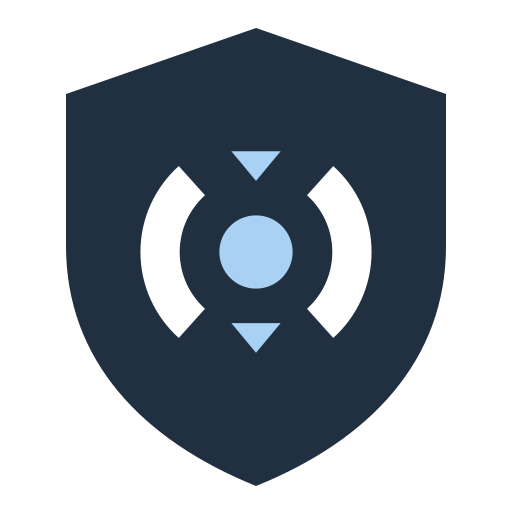

Zoraxy WAF Request inspection
Inspect before routing. Allowed requests continue through Zoraxy; blocked requests are never replayed.
Loading…
Protection
Attacks per hour
Attacks per day
Attack types
Top targets
Top rules
Top sources
Decisions since plugin start
More protection in Zoraxy
- – block countries and IP ranges before any rule runs.
- – per-host rate limiting and basic auth.
- – traffic, visitors and this plugin's widget.
Not possible for a request-phase WAF and therefore not promised: brute-force lockout after failed logins, malware or file-change scans.
Measured performance (lab, October 2026)
Lab measurement, not live data and not a capacity guarantee: shared 2-vCPU LXC test machine (2 GiB RAM), 33-byte form POST, keep-alive, 8 concurrent clients, median of two 30-second runs, October 2026.
| Setup | Requests/s | p50 latency | p95 latency |
|---|---|---|---|
| Zoraxy without WAF | 5671 | 1.14 ms | 3.22 ms |
| With WAF (Coraza + OWASP CRS, PL1, block) | 774 | 8.75 ms | 23.56 ms |
Rule evaluation is the limit. With no inspector active, Zoraxy's inspection hook showed no measurable cost (within 1.1 %). The plugin uses all CPU cores of the machine automatically; more cores raise the maximum, not the speed of a single request. Higher Speed levels (Settings) add up to +9 %. Method and raw data: docs/PERFORMANCE.md in the project repository.
Global settings
Change history
Every saved revision with what changed. Restore makes that revision current again as a new, audited revision. Stored keys are never shown.
Failure policy
Host overrides
Use an exact lowercase hostname or Zoraxy route ID; / identifies the default site only (not a path prefix). Other path keys are rejected. Route ID takes precedence. Zero limits inherit the global value.
Scoped exceptions
No automatic allowlisting. Review every suggestion. Exceptions apply only to the chosen rule + host + path, optionally method and argument. Expiry is mandatory (maximum 366 days). Existing exceptions are inactive while using an engine without rule exclusions.
Live WAF events
Newest 200 matching events. Clean allowed requests are counted but not logged. No bodies, passwords or cookie values are stored. Paths/client IPs/User-Agent may still be personal data; restrict access and retention.
Alerts
Push a few conditions to your monitoring or chat. Off by default; when off, nothing runs and nothing is sent. Delivery is best effort (5 s timeout, no retries) and never slows inspection.
Learning suggestions
Use report-only mode for a canary host. These are suggestions from the current filtered event window, not approved exceptions. No request is resent, and no rule is automatically disabled.